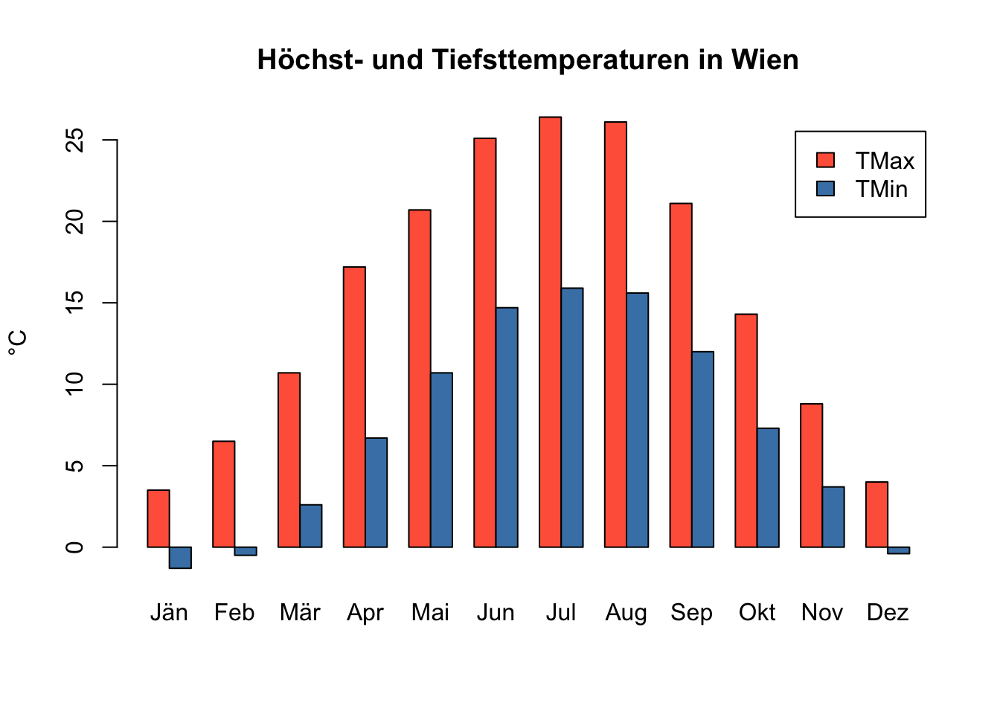

monate <- c("Jän", "Feb", "Mär", "Apr", "Mai", "Jun", "Jul", "Aug", "Sep", "Okt", "Nov", "Dez")
tmax_wien <- c( 3.5, 6.5, 10.7, 17.2, 20.7, 25.1, 26.4, 26.1, 21.1, 14.3, 8.8, 4.0)
tmin_wien <- c(-1.3, -0.5, 2.6, 6.7, 10.7, 14.7, 15.9, 15.6, 12.0, 7.3, 3.7, -0.4)
names(tmax_wien) <- monate
names(tmin_wien) <- monateEinheit 2: Datenstrukturen
In dieser Einheit lernst du weitere Datenstrukturen kennen, mit denen sich Daten in R organisieren lassen:
- Matrizen — Tabellen aus Werten desselben Typs
- Listen — Sammlungen beliebiger Objekte
- Data Frames — Tabellen mit Spalten unterschiedlichen Typs
- Faktoren — Spalten mit Kategorien
Teil 1: Matrizen
Wir verwenden wieder die Temperaturen aus Einheit 1:
Was ist eine Matrix?
Eine Matrix ist eine Sammlung von Elementen desselben Datentyps, angeordnet in Zeilen und Spalten — also zweidimensional, im Gegensatz zum eindimensionalen Vektor. Erzeugt wird sie mit matrix():
matrix(1:6, nrow = 2) [,1] [,2] [,3]
[1,] 1 3 5
[2,] 2 4 6Eine Matrix aus Vektoren bauen
Die beiden Temperaturvektoren lassen sich direkt zu einer Matrix zusammenfügen: erst alle Höchstwerte, dann alle Tiefstwerte — spaltenweise gefüllt, ergibt das genau eine Spalte pro Messwert:
wien_matrix <- matrix(c(tmax_wien, tmin_wien), ncol = 2)
wien_matrix [,1] [,2]
[1,] 3.5 -1.3
[2,] 6.5 -0.5
[3,] 10.7 2.6
[4,] 17.2 6.7
[5,] 20.7 10.7
[6,] 25.1 14.7
[7,] 26.4 15.9
[8,] 26.1 15.6
[9,] 21.1 12.0
[10,] 14.3 7.3
[11,] 8.8 3.7
[12,] 4.0 -0.4Matrizen benennen
Wie names() bei Vektoren — nur getrennt für Zeilen und Spalten:
colnames(wien_matrix) <- c("TMax", "TMin")
rownames(wien_matrix) <- monate
wien_matrix TMax TMin
Jän 3.5 -1.3
Feb 6.5 -0.5
Mär 10.7 2.6
Apr 17.2 6.7
Mai 20.7 10.7
Jun 25.1 14.7
Jul 26.4 15.9
Aug 26.1 15.6
Sep 21.1 12.0
Okt 14.3 7.3
Nov 8.8 3.7
Dez 4.0 -0.4Matrixelemente auswählen
Wie bei Vektoren mit [ ] — aber mit zwei Angaben: [Zeile, Spalte].
m[1, 2]→ Element in Zeile 1, Spalte 2m[, 1]→ alle Zeilen der 1. Spaltem[1, ]→ alle Spalten der 1. Zeile- statt Nummern gehen auch Namen:
m["Jul", "TMax"]
wien_matrix["Jul", "TMax"][1] 26.4mean(wien_matrix[, "TMin"]) # Ø Tiefsttemperatur, alle Monate[1] 7.25mean(wien_matrix[6:8, "TMin"]) # nur Juni bis August[1] 15.4Zeilen- und Spaltenmittelwerte
rowMeans() berechnet den Mittelwert jeder Zeile — hier also die Durchschnittstemperatur pro Monat (in Einheit 1 haben wir sie als tmittel_wien noch von Hand berechnet):
durchschnitt <- rowMeans(wien_matrix)
durchschnitt Jän Feb Mär Apr Mai Jun Jul Aug Sep Okt Nov Dez
1.10 3.00 6.65 11.95 15.70 19.90 21.15 20.85 16.55 10.80 6.25 1.80 colMeans() rechnet pro Spalte — die mittlere Höchst- bzw. Tiefsttemperatur über das ganze Jahr:
colMeans(wien_matrix) TMax TMin
15.36667 7.25000 Spalten und Zeilen anhängen: cbind() und rbind()
cbind() fügt spaltenweise zusammen (column bind), rbind() zeilenweise (row bind). Wir hängen die Durchschnittstemperatur als Spalte an und die Spaltenmittelwerte als Zeile:
wien_erweitert <- cbind(wien_matrix, Mittel = durchschnitt)
wien_erweitert <- rbind(wien_erweitert, Gesamt = colMeans(wien_erweitert))
round(wien_erweitert, 1) TMax TMin Mittel
Jän 3.5 -1.3 1.1
Feb 6.5 -0.5 3.0
Mär 10.7 2.6 6.6
Apr 17.2 6.7 11.9
Mai 20.7 10.7 15.7
Jun 25.1 14.7 19.9
Jul 26.4 15.9 21.1
Aug 26.1 15.6 20.9
Sep 21.1 12.0 16.6
Okt 14.3 7.3 10.8
Nov 8.8 3.7 6.2
Dez 4.0 -0.4 1.8
Gesamt 15.4 7.2 11.3Die Matrix als Balkendiagramm
barplot() funktioniert auch mit einer Matrix. t() dreht sie (Zeilen ↔︎ Spalten), damit die Monate auf der x-Achse landen; beside = TRUE stellt TMax und TMin nebeneinander:
barplot(t(wien_matrix), beside = TRUE,
legend.text = TRUE,
main = "Höchst- und Tiefsttemperaturen in Wien",
ylab = "°C",
col = c("tomato", "steelblue"))
Übung
- Wähle aus
wien_matrixdie Werte für Juli und August (beide Spalten) aus. - Berechne für jeden Monat die Spanne
TMax - TMinund hänge sie mitcbind()als SpalteSpanneanwien_matrixan. - In wie vielen Monaten ist die Spanne kleiner als 6 °C? (Tipp:
sum())
# dein CodeTeil 2: Listen und Data Frames
Listen
Vektoren und Matrizen enthalten nur einen Datentyp. Eine Liste kann dagegen beliebige Objekte unterschiedlichen Typs und unterschiedlicher Länge sammeln:
wien_info <- list(stadt = "Wien",
einwohner = 2000000,
bezirke = c("Innere Stadt", "Leopoldstadt", "Landstraße"),
temperatur_juli = c(TMax = 26.4, TMin = 15.9))
str(wien_info)List of 4
$ stadt : chr "Wien"
$ einwohner : num 2e+06
$ bezirke : chr [1:3] "Innere Stadt" "Leopoldstadt" "Landstraße"
$ temperatur_juli: Named num [1:2] 26.4 15.9
..- attr(*, "names")= chr [1:2] "TMax" "TMin"Ein einzelnes Element holt man mit $ oder doppelten eckigen Klammern [[ ]]:
wien_info$stadt[1] "Wien"wien_info[["bezirke"]][1] "Innere Stadt" "Leopoldstadt" "Landstraße" Listen begegnen dir vor allem indirekt: Viele Funktionen geben ihr Ergebnis als Liste zurück. Auch ein Data Frame ist eine Liste — eine Liste gleich langer Vektoren, einer pro Spalte.
Data Frame
Die häufigste Form, in der Daten gespeichert werden, ist die Tabelle: jede Zeile eine Beobachtung (eine Gemeinde, eine Person, ein Messzeitpunkt), jede Spalte eine Variable (Name, Einwohnerzahl, Datum). In R heißt eine solche Tabelle Data Frame. Anders als in einer Matrix darf jede Spalte ihren eigenen Datentyp haben — Text (character), Zahlen (numeric) und Ja/Nein-Angaben (logical) stehen nebeneinander, wie in Excel.
Einen Data Frame erstellen
Wir bauen einen Data Frame mit den acht Planeten unseres Sonnensystems: Typ, Durchmesser (relativ zur Erde), Rotationsdauer (in Erdtagen; negativ = dreht sich rückwärts) und ob der Planet Ringe hat:
name <- c("Merkur", "Venus", "Erde", "Mars", "Jupiter", "Saturn", "Uranus", "Neptun")
typ <- c("Gesteinsplanet", "Gesteinsplanet", "Gesteinsplanet", "Gesteinsplanet",
"Gasriese", "Gasriese", "Eisriese", "Eisriese")
durchmesser <- c(0.382, 0.949, 1, 0.532, 11.209, 9.449, 4.007, 3.883)
rotation <- c(58.64, -243.02, 1, 1.03, 0.41, 0.43, -0.72, 0.67)
hat_ringe <- c(FALSE, FALSE, FALSE, FALSE, TRUE, TRUE, TRUE, TRUE)data.frame() fügt gleich lange Vektoren zu einem Data Frame zusammen — jeder Vektor wird eine Spalte:
planeten <- data.frame(name, typ, durchmesser, rotation, hat_ringe)
planeten name typ durchmesser rotation hat_ringe
1 Merkur Gesteinsplanet 0.382 58.64 FALSE
2 Venus Gesteinsplanet 0.949 -243.02 FALSE
3 Erde Gesteinsplanet 1.000 1.00 FALSE
4 Mars Gesteinsplanet 0.532 1.03 FALSE
5 Jupiter Gasriese 11.209 0.41 TRUE
6 Saturn Gasriese 9.449 0.43 TRUE
7 Uranus Eisriese 4.007 -0.72 TRUE
8 Neptun Eisriese 3.883 0.67 TRUEErste Einblicke in einen Datensatz
Acht Zeilen überblickt man auf einen Blick. Echte Datensätze haben oft Tausende — dann verschafft man sich mit diesen Funktionen einen Überblick:
head()/tail()— die ersten bzw. letzten Zeilenstr()— Anzahl Zeilen und Spalten, Datentypen, Beispielwertesummary()— Kennzahlen pro Spalte (Minimum, Mittelwert, Maximum …)nrow()/ncol()— Anzahl Zeilen bzw. Spalten;dim()liefert beides auf einmal
str() ist meist der erste Befehl bei einem unbekannten Datensatz:
str(planeten)'data.frame': 8 obs. of 5 variables:
$ name : chr "Merkur" "Venus" "Erde" "Mars" ...
$ typ : chr "Gesteinsplanet" "Gesteinsplanet" "Gesteinsplanet" "Gesteinsplanet" ...
$ durchmesser: num 0.382 0.949 1 0.532 11.209 ...
$ rotation : num 58.64 -243.02 1 1.03 0.41 ...
$ hat_ringe : logi FALSE FALSE FALSE FALSE TRUE TRUE ...dim(planeten) # 8 Zeilen, 5 Spalten[1] 8 5head(planeten, 3) # die ersten drei Zeilen (ohne Zahl: sechs) name typ durchmesser rotation hat_ringe
1 Merkur Gesteinsplanet 0.382 58.64 FALSE
2 Venus Gesteinsplanet 0.949 -243.02 FALSE
3 Erde Gesteinsplanet 1.000 1.00 FALSEsummary(planeten) name typ durchmesser rotation
Length :8 Length : 8 Min. : 0.3820 Min. :-243.0200
N.unique :8 N.unique : 3 1st Qu.: 0.8448 1st Qu.: 0.1275
N.blank :0 N.blank : 0 Median : 2.4415 Median : 0.5500
Min.nchar:4 Min.nchar: 8 Mean : 3.9264 Mean : -22.6950
Max.nchar:7 Max.nchar:14 3rd Qu.: 5.3675 3rd Qu.: 1.0075
Max. :11.2090 Max. : 58.6400
hat_ringe
Mode :logical
FALSE:4
TRUE :4
Elemente und Spalten auswählen
Wie bei Matrizen: [Zeile, Spalte]. Statt Nummern lassen sich Spaltennamen verwenden — das ist besser lesbar:
planeten[1, 3] # Zeile 1, Spalte 3: Durchmesser von Merkur[1] 0.382planeten[4, ] # ganze Zeile 4: alle Daten zu Mars name typ durchmesser rotation hat_ringe
4 Mars Gesteinsplanet 0.532 1.03 FALSEplaneten[1:3, "typ"] # Zeilen 1-3 der Spalte "typ"[1] "Gesteinsplanet" "Gesteinsplanet" "Gesteinsplanet"Eine ganze Spalte holt man am einfachsten mit $ — als Vektor:
planeten$durchmesser[1] 0.382 0.949 1.000 0.532 11.209 9.449 4.007 3.883Ein Minuszeichen vor der Nummer bedeutet „alles außer”:
planeten[, -1] # alle Spalten außer der ersten typ durchmesser rotation hat_ringe
1 Gesteinsplanet 0.382 58.64 FALSE
2 Gesteinsplanet 0.949 -243.02 FALSE
3 Gesteinsplanet 1.000 1.00 FALSE
4 Gesteinsplanet 0.532 1.03 FALSE
5 Gasriese 11.209 0.41 TRUE
6 Gasriese 9.449 0.43 TRUE
7 Eisriese 4.007 -0.72 TRUE
8 Eisriese 3.883 0.67 TRUEplaneten[-(1:4), ] # alle Zeilen außer 1–4 name typ durchmesser rotation hat_ringe
5 Jupiter Gasriese 11.209 0.41 TRUE
6 Saturn Gasriese 9.449 0.43 TRUE
7 Uranus Eisriese 4.007 -0.72 TRUE
8 Neptun Eisriese 3.883 0.67 TRUEKategorien ansehen und zählen: unique(), table()
unique() zeigt, welche verschiedenen Werte in einer Spalte vorkommen:
unique(planeten$typ)[1] "Gesteinsplanet" "Gasriese" "Eisriese" table() zählt sie:
table(planeten$typ)
Eisriese Gasriese Gesteinsplanet
2 2 4 Zeilen filtern
Ein logischer Vektor in der Zeilenposition wählt die Zeilen aus, bei denen TRUE steht:
planeten[planeten$hat_ringe, ] # nur Planeten mit Ringen name typ durchmesser rotation hat_ringe
5 Jupiter Gasriese 11.209 0.41 TRUE
6 Saturn Gasriese 9.449 0.43 TRUE
7 Uranus Eisriese 4.007 -0.72 TRUE
8 Neptun Eisriese 3.883 0.67 TRUEplaneten[planeten$durchmesser < 1, ] # nur Planeten kleiner als die Erde name typ durchmesser rotation hat_ringe
1 Merkur Gesteinsplanet 0.382 58.64 FALSE
2 Venus Gesteinsplanet 0.949 -243.02 FALSE
4 Mars Gesteinsplanet 0.532 1.03 FALSEsubset() ist die kürzere Schreibweise — man kann die Spaltennamen direkt verwenden:
subset(planeten, durchmesser < 1) name typ durchmesser rotation hat_ringe
1 Merkur Gesteinsplanet 0.382 58.64 FALSE
2 Venus Gesteinsplanet 0.949 -243.02 FALSE
4 Mars Gesteinsplanet 0.532 1.03 FALSESortieren mit order()
sort() sortiert einen Vektor (Einheit 1). Um einen Data Frame zu sortieren, braucht man
sort(tmax_wien) # die sortierten Werte Jän Dez Feb Nov Mär Okt Apr Mai Sep Jun Aug Jul
3.5 4.0 6.5 8.8 10.7 14.3 17.2 20.7 21.1 25.1 26.1 26.4 order(): Es liefert nicht die Werte, sondern die Positionen in sortierter Reihenfolge.
order(tmax_wien) # ihre Positionen: zuerst 1 (Jänner), dann 12 (Dezember) … [1] 1 12 2 11 3 10 4 5 9 6 8 7Diese Positionen als Zeilenindex sortieren den ganzen Data Frame:
planeten[order(planeten$durchmesser), ] # aufsteigend name typ durchmesser rotation hat_ringe
1 Merkur Gesteinsplanet 0.382 58.64 FALSE
4 Mars Gesteinsplanet 0.532 1.03 FALSE
2 Venus Gesteinsplanet 0.949 -243.02 FALSE
3 Erde Gesteinsplanet 1.000 1.00 FALSE
8 Neptun Eisriese 3.883 0.67 TRUE
7 Uranus Eisriese 4.007 -0.72 TRUE
6 Saturn Gasriese 9.449 0.43 TRUE
5 Jupiter Gasriese 11.209 0.41 TRUEplaneten[order(planeten$durchmesser, decreasing = TRUE), ] # absteigend name typ durchmesser rotation hat_ringe
5 Jupiter Gasriese 11.209 0.41 TRUE
6 Saturn Gasriese 9.449 0.43 TRUE
7 Uranus Eisriese 4.007 -0.72 TRUE
8 Neptun Eisriese 3.883 0.67 TRUE
3 Erde Gesteinsplanet 1.000 1.00 FALSE
2 Venus Gesteinsplanet 0.949 -243.02 FALSE
4 Mars Gesteinsplanet 0.532 1.03 FALSE
1 Merkur Gesteinsplanet 0.382 58.64 FALSEÜbung
- Die Kleinen: Welche Planeten sind kleiner als die Erde? Gib nur ihre Namen aus.
- Die Großen: Zeige die drei größten Planeten (Tipp: erst sortieren, dann
head()). - Ringe: Wie viele Planeten haben Ringe — und von welchem Typ sind sie?
# dein CodeTeil 3: Faktoren
Ein Faktor ist der Datentyp für kategoriale Variablen — Werte aus einer begrenzten Menge an Kategorien. Zwei Arten:
- nominal — ohne Reihenfolge, z. B. der Planetentyp:
"Gesteinsplanet","Gasriese","Eisriese" - ordinal — mit Reihenfolge, z. B. eine Größenklasse:
"klein"<"mittel"<"groß"
Mit factor() wird ein Text-Vektor zu einem Faktor; die vorkommenden Werte werden zu Levels. summary() zählt die Häufigkeit pro Level:
typ_faktor <- factor(planeten$typ)
typ_faktor[1] Gesteinsplanet Gesteinsplanet Gesteinsplanet Gesteinsplanet Gasriese
[6] Gasriese Eisriese Eisriese
Levels: Eisriese Gasriese Gesteinsplanetsummary(typ_faktor) Eisriese Gasriese Gesteinsplanet
2 2 4 Levels umbenennen
R sortiert die Levels alphabetisch ("Eisriese", "Gasriese", "Gesteinsplanet") — in genau dieser Reihenfolge lassen sie sich mit levels() umbenennen, z. B. in kürzere Bezeichnungen für eine Grafik:
levels(typ_faktor) <- c("Eis", "Gas", "Gestein")
typ_faktor[1] Gestein Gestein Gestein Gestein Gas Gas Eis Eis
Levels: Eis Gas GesteinNominal vs. ordinal
Bei einem nominalen Faktor ergibt ein Größenvergleich keinen Sinn — R gibt eine Warnung und NA zurück:
typ_faktor[1] > typ_faktor[5] # ist "Gestein" größer als "Gas"?Warning in Ops.factor(typ_faktor[1], typ_faktor[5]): '>' not meaningful for
factors[1] NAAnders bei einer Einstufung mit Reihenfolge. Wir teilen die Planeten nach ihrem Durchmesser grob in Größenklassen ein:
groesse <- c("klein", "mittel", "mittel", "klein", "groß", "groß", "groß", "groß")Für einen geordneten Faktor gibt man ordered = TRUE und die levels in der richtigen Reihenfolge an — dann funktionieren Vergleiche. Ohne levels würde R alphabetisch sortieren: "groß" < "klein" < "mittel".
groesse <- factor(groesse, ordered = TRUE, levels = c("klein", "mittel", "groß"))
groesse[1] klein mittel mittel klein groß groß groß groß
Levels: klein < mittel < großgroesse[1] > groesse[2] # ist Merkur größer eingestuft als Venus?[1] FALSEÜbung
Die zwölf Monate lassen sich nach ihrer Höchsttemperatur (tmax_wien) grob einstufen:
einstufung <- c("kalt", "kalt", "mild", "mild", "warm", "heiß",
"heiß", "heiß", "warm", "mild", "kalt", "kalt")- Mache daraus einen geordneten Faktor von
"kalt"bis"heiß". - Zähle mit
table(), wie oft jede Stufe vorkommt. In welcher Reihenfolge stehen die Levels — und warum? - Wie viele Monate sind wärmer als
"mild"? (Tipp:sum())
# dein Code